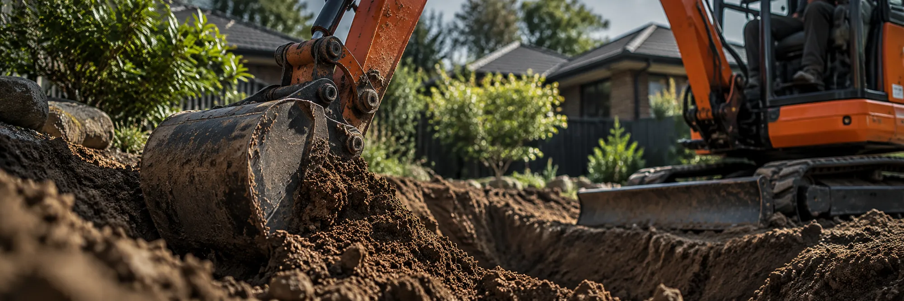

Free site visits & quotes
Service areas
Based in Dural. Local across the Hills District, and working right across Sydney.
Hills District
Our local suburbs.
These suburbs are close to our Dural base, so getting to your job is quick and easy. Pick yours to see the work we do there.
Our machine
Kubota U17-3 1.7 tonne mini excavator.
A compact machine built for tight sites. Its tracks pull in narrow enough for most side gates and passages, and the short tail swing means it can work close to houses, fences and walls.
- Fits through narrow side access
- Works close to structures
- Light on lawns and driveways
- Operated by us, every job

Ready to get started?
Need excavation near you?
Tell us about the job and we’ll arrange a free site visit and quote. No cost, no obligation.